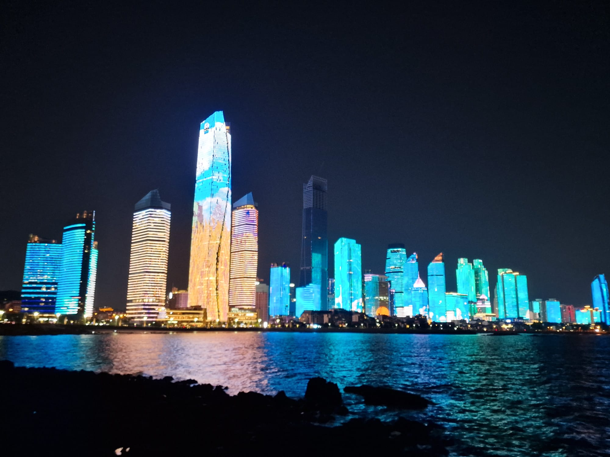
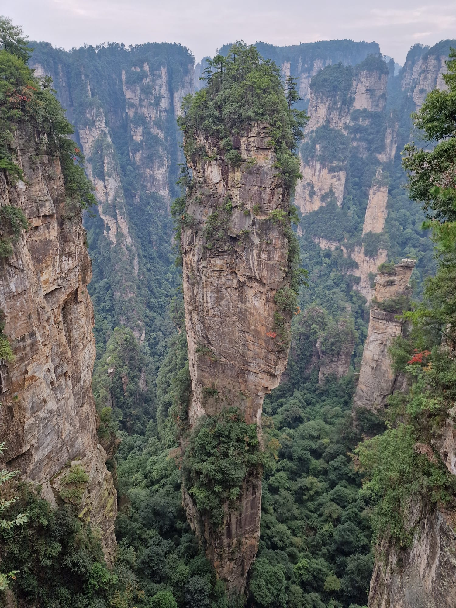

Two weeks in China - Travelogue Part 1: Preparation & arrival, Qingdao (1), Zhangjiajie National Park

sdfdsf
This three-part travelogue describes a two-week trip to China in the fourth quarter of 2024. I visited a friend in Qingdao and went on a short round trip with him. In addition to my experiences, I also share some tips for anyone planning a trip to China.
Preparation & arrival
The preparations were relatively simple. Since December 1, 2023, German and other European citizens have been able to travel to China visa-free for up to 15 calendar days. However, it is important that the passport is valid for at least six months upon entry. The national currency is the renminbi (RMB), with 1 € currently equivalent to around 7.4 RMB. Cash is hardly necessary in China, as almost all payments are made via apps such as Alipay or WeChat Pay using a QR code - even in remote markets or amusement parks. Digital preparation is essential, as many Western services such as Google, WhatsApp and Instagram are blocked by the Great Firewall. A VPN is therefore essential, but not all providers work reliably. For mobile data, many travelers recommend the use of eSIMs, with “Airalo” often mentioned as a suitable provider. Google Maps is not reliable for navigation as it has not been updated for years. Instead, Chinese apps such as Baidu Maps or Amap (高德地图) are recommended. Amap in particular is popular among travelers, but it is only available in Chinese. Users of Apple devices can at least access relatively up-to-date English-language maps. My journey was uncomplicated: I reached Qingdao with a transfer flight and a short layover in Beijing.
Qingdao - First impressions
After arriving in Qingdao, we went straight to a restaurant at the airport, which was surprisingly inexpensive despite its luxurious furnishings. We then took the subway (journey time approx. 1-2 hours) to my friend's accommodation - a penthouse apartment on the top floor of a high-rise building in a residential area consisting of many high-rise buildings. Without a long break, we set off for a birthday party and ordered a Didi (the Chinese equivalent of Uber). This transport service is widespread in China, easy to use (as long as you can give the driver your Chinese address and/or know how to use the non-English app) and usually cheap. The party took place in a bar with karaoke, where we were greeted personally by the hostess. Although tourism is slowly picking up again, Western visitors are still a rarity and attract attention.
The next day we explored Qingdao. The promenade around Qingdao No.2 Bathing Beach and the picturesque Badaguan district with its tree-lined streets and European-style villas were particularly impressive. In the evening, the Qingdao Third Sea Bathing Place offers a relatively good view of the regular light shows on the skyline, which are synchronized across the high-rise buildings on the waterfront and extend over several hundred metres. Here we also met a nice gentleman from Beijing who, like us, had used the evening to record the skyline by drone.

Zhangjiajie National Park & Zhangjiajie City
Early the next morning, we flew to Zhangjiajie, where we planned to spend two days in Zhangjiajie National Park. The flight took about three hours, but the onward journey to our accommodation took another 3-4 hours. As the park is only accessible by bus, cable car and on foot, the journey was time-consuming - but it was worth it! Spending the night right in the park allowed us to avoid the crowds of tourists, especially as Golden Week was approaching, when half of China seems to be out and about.
After a short stay in the town, where we had a surprisingly cheap meal in a simple workers' canteen, we took the bus to the first cable car station. The park's cable car routes are among the longest and most impressive in the world, with breathtaking views of the up to 1,000-metre-high quartz sandstone pillars - a landscape that served as inspiration for the Avatar films and is a UNESCO World Heritage Site for good reason. Fortunately, we were given directions to the accommodation beforehand via WhatsApp, so it wasn't really complicated to find it, as long as we had asked the bus driver to let us off at a less frequented stop. In addition to the location, the accommodation was a stroke of luck in that there was a private sunset spot and many international people used it. This included a mixed group of students (from Italy, Canada and Australia, among others) who had come from a university near Shanghai to spend their vacation here and make the most of the holidays. We also met an American businessman and his German wife who had spent some time with a host family in China to learn the language since his business was taken over by a Chinese company.
We spent the next two days exploring the park in detail, sometimes joining the international group to explore well-known hiking routes together. As we only had two nights' accommodation in the park, we made our way back to Zhangjiajie the day after next, where we used the rest of the day to visit another well-known attraction, Tianmen Mountain. This is a huge crevice at an altitude of over 1,500 m, which itself is 130 m high and could even be seen with the naked eye on the approach to Zhangjiajie. Despite the bad weather with lots of fog, it was quite an impressive trip, especially as you are also on one of the longest high mountain passenger cable cars.
